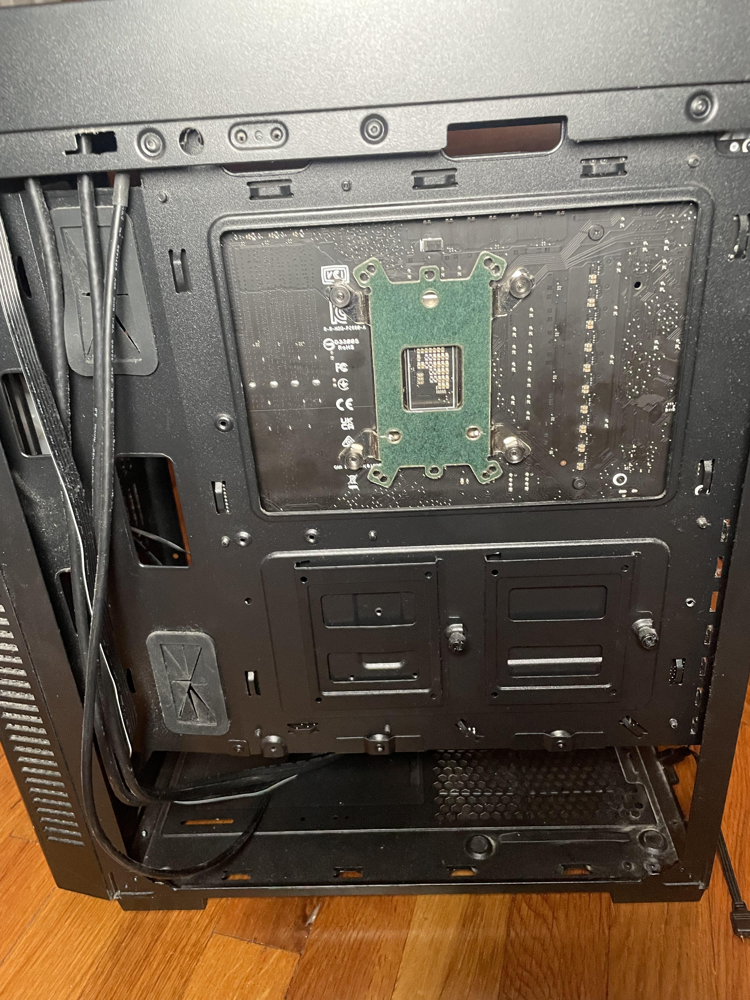
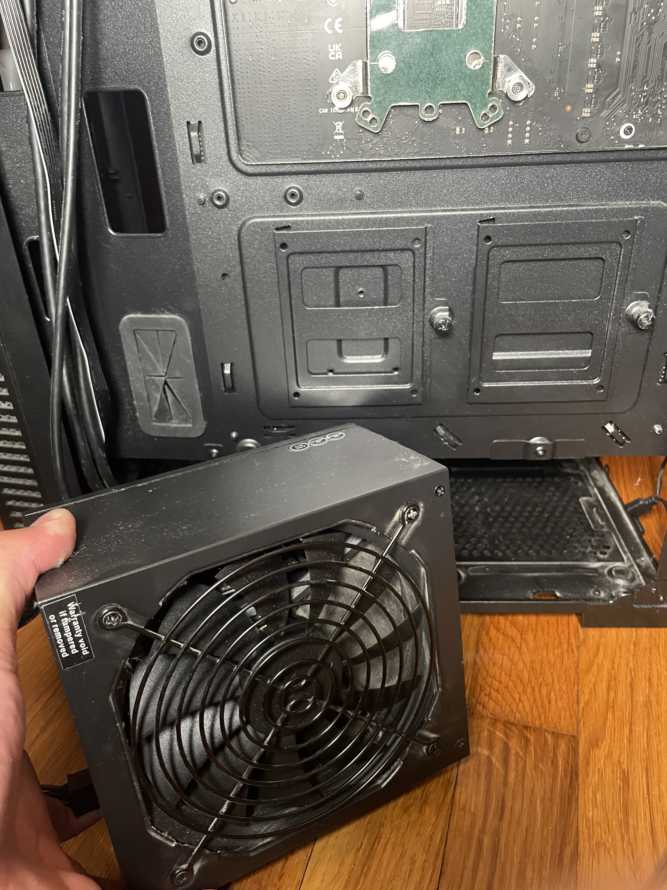
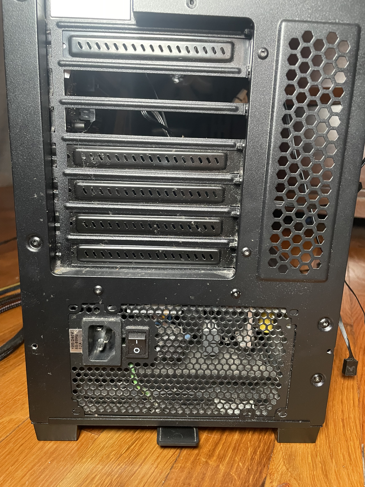
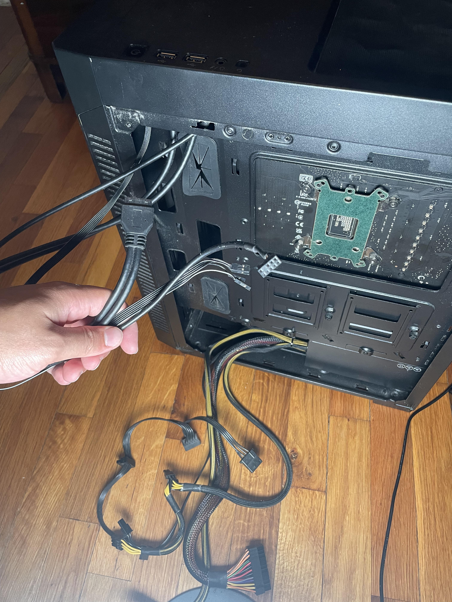
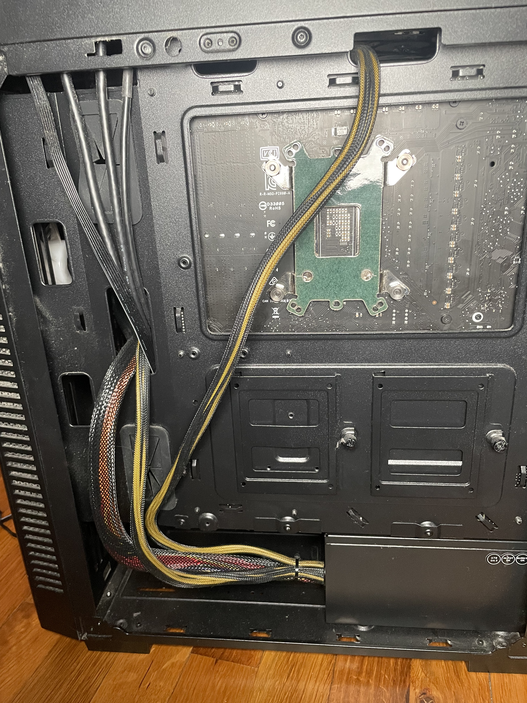

Step 5: Install PSU and Manage Cables
Materials Needed
- Power Supply Unit (PSU)
- PC Case
- Screws and Screwdriver
- Optional: Cable Ties (for Cable Management)
Instructions
- Position the PSU
- Secure the PSU in Place
- Before organizing PSU and Case cables
- Organize Cables for a Clean Build
Locate the slot at the back of the case where the PSU will be installed. Ensure that the PSU fan is facing downward to allow proper airflow.
 Align the PSU with the mounting holes on the case and use screws to secure it in place.
At this stage in the build, you will be seeing a lot of loose wires, and things will look messy.
I don't have cable ties but if you did you could use them to manage and secure cables, creating a neat setup. This helps improve airflow and reduces clutter inside the case.
Video Guides
- PSU Installation Process: Watch Video
- Cable Management Example: Watch Video